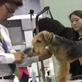

Dog School
자격증 안내
반려견의 털을 깎거나 염색하는 것은 기본이며, 옷이나 액세서리 등으로 치장하는 일까지 담당하며 이를 통해 개의 상태를 살펴 단점은 보완하고 장점을 돋보이게 하는 독 스타일리스트입니다. 항상 개를 가까이하므로 여러가지 피부질환이나 그 밖의 각종 질병을 쉽게 접하게 되어 수의 간호사까지도 연결될 수 있습니다.
반려견 트리머는 개에 대한 사랑과 관심은 기본이며, 여러가지 지식과 경험, 브리딩 노하우 등이있어야 합니다.
- 
| 트리머 3급 | 학원이나 문화센터에서 6개월 과정 이상을 이수한 자 | 자격증 발급단체에 따라 약간의 차이가 있으며, 학생들의 의견에 따라 발급 단체는 정해집니다. |
|---|---|---|
| 트리머 2급 | 3급을 취득 후 6개월 과정을 이수한 자 | |
| 트리머 1급 | 2급 취득 후 일정기간 이상 보수교육을 받았거나 실무경력이 이상인 자 | |
| 강사(교사), 사범 | 자격증 발급단체의 규정에 따라 상이한 부분이 있음. |
반려견을 훈련시키거나, 견주를 대상으로 사회화와 행동교정을 가르쳐주는 독 트레이너입니다.
개의 심리에 대한 해박한 지식과 개의 본능까지도 이해하는 공부가 되어 있어야 하며, 개의 상태에 따라 시간적 차이는 있겠지만 어떠한 개든 바람직한 방향의 행동교정을 이끌어낼 수 있어야 합니다.
| 트레이너 3급 | 트레이너 과정 6개월 이상을 이수한 자 | 자격증 발급단체에 따라 약간의 차이가 있으며, 학생들의 의견에 따라 발급 단체는 정해집니다. |
|---|---|---|
| 트레이너 2급 | 3급을 취득 후 6개월 실무 경력을 보유한 자 | |
| 트레이너 1급 | 2급 취득 후 일정기간 이상 보수교육을 받았거나 실무경력 1년 이상인 자 | |
| 강사(교사), 사범 | 자격증 발급단체의 규정에 따라 상이한 부분이 있음. |
※ 이 외에도 수의간호 조무사, 매개치료사 등이 있습니다.
Dog show(애견 전람회)에서 쇼 독을 리딩하며, 출진하기 전까지 개의 정신적, 육체적 상태를 최적의 상태로 관리하는 반면, 장단점을 파악하여 장점을 극대화 시키는 사람입니다. 개의 성격은 물론 모질에도 상당한 경지에 올라야만 할 수 있는 애견계의 꽃이라 할 수 있죠
| 핸들러 3급 | 핸들러 과정 6개월 이상을 이수한 자 | 자격증 발급단체에 따라 약간의 차이가 있으며, 학생들의 의견에 따라 발급 단체는 정해집니다. |
|---|---|---|
| 핸들러 2급 | 3급을 취득 후 6개월 실무 경력을 보유한 자 | |
| 핸들러 1급 | 2급 취득 후 일정기간 이상 보수교육을 받았거나 실무경력 1년 이상인 자 | |
| 강사(교사), 사범 | 자격증 발급단체의 규정에 따라 상이한 부분이 있음. |
※ 이 외에도 트레이너, 행동교정사, 수의간호조무사, 매개치료사 등이 있습니다.